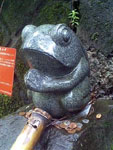
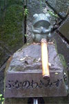

群馬県山中にひっそりカエル石像！
【群馬発千葉のコロタン同志記者】お盆休みを利用して彼女と群馬に行ってきました。沼田市の玉原湿原にカエルの石像があると知ってカエル大好きな私達はそれを第一目的に行ってきました。静かな山道の草の間にひっそりと佇んでいたカエルの石像をついに発見！思わず２人でお賽銭をあげて水で何度も洗ってあげ�２人の願いをカエルさんに託してきました！

【全国かえる奉賛会】なにごとも、カエル存在の知らせを聞くと、でかけてしまうのが、真のかエラーなり。山中にひっそり佇むカエルも、わざわざ訪ねる人あったとは、うれしい限りであろう。
カエルの下半身からは、名水も出ているようだし、ここの水をくむと霊験あらたかな、万病にきく霊水にちがいないぞおおおおおおおおお。
二匹のカエルの旅を描く絵本！
【神奈川県発キネジコ同志記者】かえるのことを調べていて「かえる新聞」にたどりつきました。私はカエル大好きの陶芸家です。かえるの絵本も書いています。
【全国かえる奉賛会】カエル村から二匹のカエルが旅に出た。ケロドトスとガストレインの旅を描いた素敵な作品なりいいいい。特に、粘土細工で話を展開しているんだけど、その細工のきれいで不思議な感覚は、直接いってみるしかないぞ！！
湯布院に「ぴょん屋」が出現！
【大分発げこげこ大王直筆】全国的に著名な温泉地に発展した湯布院温泉には、ここんとこ、犬猫グッズ屋とかステンドグラス屋とか、ワッフル屋にガラス細工屋、自動車博物館や、焼き芋やとかプレーぷハウスとか、シャガール美術館とか、人力車の大群とか、素晴らしい土産物やが大量に進出しているのだが、観光客にも待望されていた、カエル雑貨だけを扱う「ぴょんや」が出現している。
【全国かえる奉賛会】全国から湯布院にいらっしゃるみなさあああああん。これからは、湯布院にやってきたら、スダチとか、豆腐とか、ジャムとか湯布院クッキーとか、湯布院ケーキとか買うのはやめて、湯布院名物のカエルグッズだけを買っておみやげとして、隣近所にくばりまくろうではないかああああ。
�

カエル新聞縮刷版が書店で発売中！
【全国かえる奉賛会】ついにカエル新聞縮刷版が出ました！今すぐ全国の書店に走ろう！創刊から９年目。カエラーとともに歩んで来た「かえる新聞」の記事の中から５０回分を抜粋してお届けする、縮刷版なのであるー。
 ネットでみてきた人も、今度は、自分の投稿記事を寝転びながら読むことができるぞおおおおおおおお。今すぐ書店に走ろう。田舎すぎて書店がないひとや、売り切れ続出で、現物が手にできないひとは、まず、表紙の画像をクリックして、きにいったらネット販売もしているので、よろしくたのむぞおお。
ネットでみてきた人も、今度は、自分の投稿記事を寝転びながら読むことができるぞおおおおおおおお。今すぐ書店に走ろう。田舎すぎて書店がないひとや、売り切れ続出で、現物が手にできないひとは、まず、表紙の画像をクリックして、きにいったらネット販売もしているので、よろしくたのむぞおお。
 この度、カエラーの同志諸君とともに歩んできた、カエル新聞の縮刷版を発刊するにいたり、まことに喜ばしく思っております。今後ともカエルのネタがあったら、どんどん投稿して、カエル徽章を手にしてくれええええええ。
この度、カエラーの同志諸君とともに歩んできた、カエル新聞の縮刷版を発刊するにいたり、まことに喜ばしく思っております。今後ともカエルのネタがあったら、どんどん投稿して、カエル徽章を手にしてくれええええええ。
携帯で携帯＠カエル新聞を吸い取ろう！
 【全国かえる奉賛会】携帯から初めてカエル新聞を見たいというひとにとっては、アドレスを打つのが難儀なものよのう！そこでドコモとボーダフォンの一部機種から、カメラをかざしてコードを読みとるんぢゃああ。なお、このQRコードを眺めていたらカエルやらオタマジャクシやらが浮かび上がってくるらしいぞおお。ほんとかああ。
【全国かえる奉賛会】携帯から初めてカエル新聞を見たいというひとにとっては、アドレスを打つのが難儀なものよのう！そこでドコモとボーダフォンの一部機種から、カメラをかざしてコードを読みとるんぢゃああ。なお、このQRコードを眺めていたらカエルやらオタマジャクシやらが浮かび上がってくるらしいぞおお。ほんとかああ。